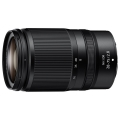

器材库 > 35mm画幅AF变焦镜头 > Z 28-75/2.8

详细规格
发布日期
2021-12-14
焦距
28mm-75mm
最大光圈
f/2.8
最小光圈
f/22
视角（对角）
75° - 32°10
镜头结构
15片/12组
非球面镜片
3片
低/超低色散镜片
1枚加强型低色散ED镜片，1枚低色散ED镜片
光圈叶片
9片
最近对焦距离
19cm
最大放大倍率
0.34倍
驱动马达
STM
滤镜口径
67mm
镜头卡口
Nikon Z
防抖
否
颜色
黑色
尺寸
75×120.5mm
重量
565g
附件
LC-67B镜头盖（前盖），LF-N1镜头盖（后盖），HB-93A镜头遮光罩，CL-C2镜头套
龙仔andy2022-04-08 18:124.75 分
操作性 5.00耐用性 4.50性价比 4.00解像力 5.00色彩还原 5.00机械结构 5.00
P家老同志2022-01-21 13:504.33 分
操作性 5.00耐用性 4.50性价比 3.50解像力 4.50色彩还原 4.00机械结构 4.50
产品图 / 样片
Z 28-75/2.8
评测 / 相关文章
- 详细内容 （原站已下线）
- F2.8标变新选择 尼康Z 28-75mm f/2.8评测 （原站已下线）
- ［资讯］尼康 Z 28-75/2.8 镜头官方样片欣赏 （原站已下线）
相关文章
- ［试用］F2.8标变新选择 尼康Z 28-75mm f/2.8评测 （原站已下线）
- ［资讯］尼康发布Z 28-75mm f/2.8镜头 （原站已下线）
- ［资讯］尼康 Z 28-75/2.8 镜头官方样片欣赏 （原站已下线）